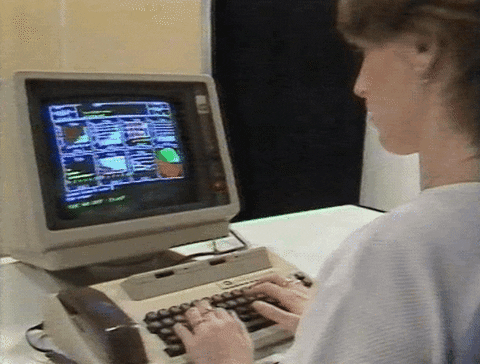

=>> Hmm so you want to know more about me ? 🤔
<> I don't tell anybody about me but here I am fine with telling "you" about who I really am. So I am just a kid, who goes to school and stuff does normal stuff, things that catch my intrest are not intresting enough for another people or they just do it becuase they think its cool, for ex. programming, hacking etc, because there no one around me who shares the same intrests as me except some people I have to forcefully act like I like the thing that others like. I don't want to be normal I want to bring a change even if it's un-noticeable or just a bit, I don't want to sit and watch tv with a fat stomach in my 40's and catch a train every morning at 7 o'clock and work my ass off for very little money I just want to think about my grind for making money. Here's a quote for ending this biography ? . ❝The world as we have created it is a process of our thinking. It cannot be changed without changing our thinking❞ ― Albert Einstein. This was me in my words.
=>> My different personalities
<> It's not like I have a mental illness but I have different personality based on the person in front of me in front of my parent I am a innocent little boy, when I am with my friends I do what ever I want to for ex. It was my exam my friend was sitting on another bench which on left of me he wanted some answer but it was big I coudn't tell him verbally so I threw my answersheet on him yeah XD, with my family members I am the chad the sigma male I don't know why I always want to prove to my family members that I am better than your kids, when I am sitting by myself I think of what to do in life and be disgusted with mentallity of other people yeeeaaah I am a very complicated person or I think so.
=>> How did I get intrested in programming
<> I was just surfing youtube and I saw a video how to make a game in unity it was the first time I learned to program. C# was my first language, and as soon I saw a cube moving on my screen it was a very satisfying and that's how I got introduced to programming then I found my passion ?, then I learned many languages, made many projects also made an operating system,XD which was so complex that my tiny brain could not handle it.